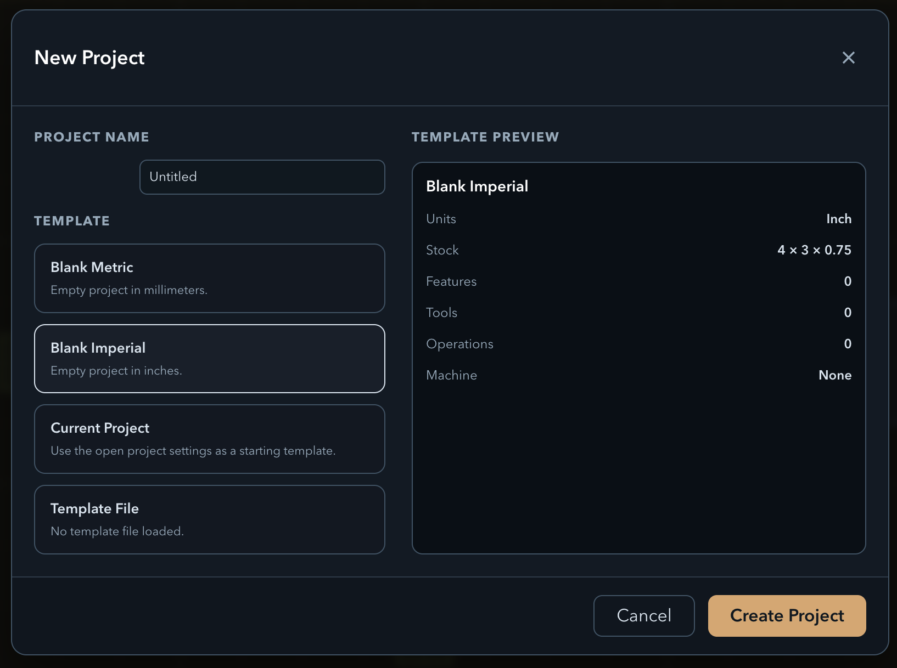
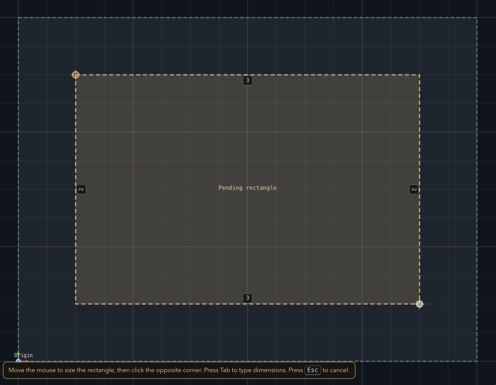
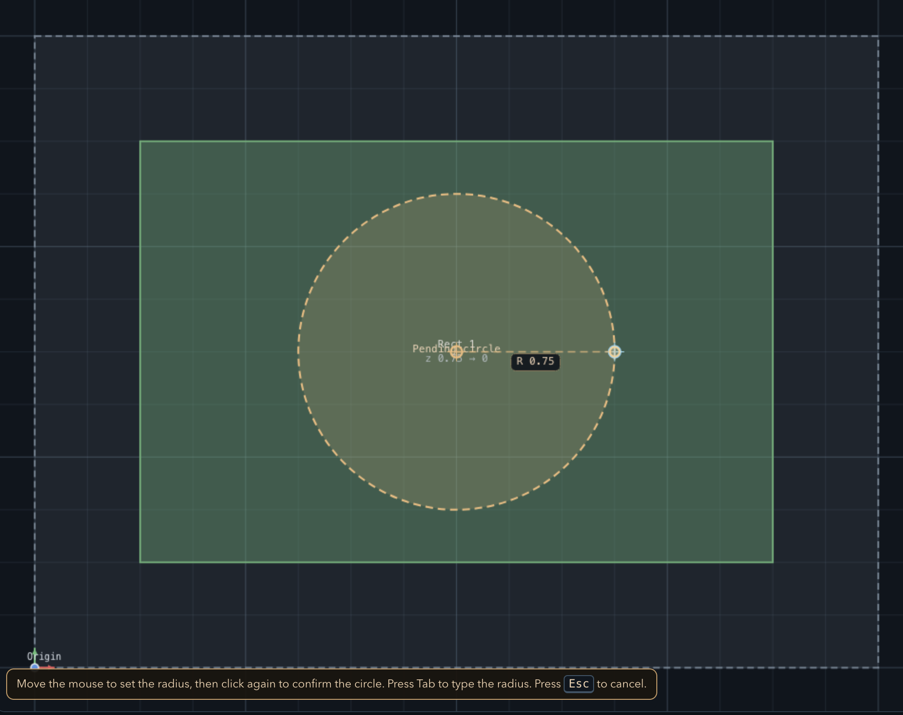
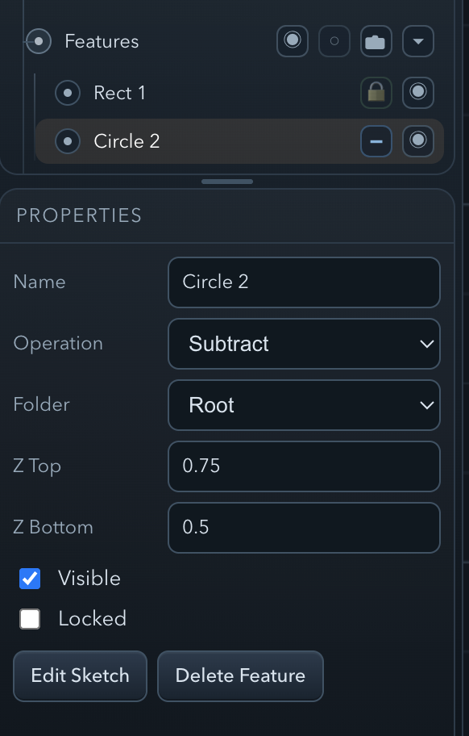
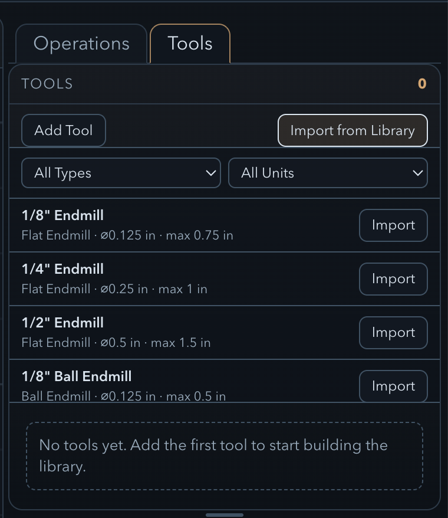
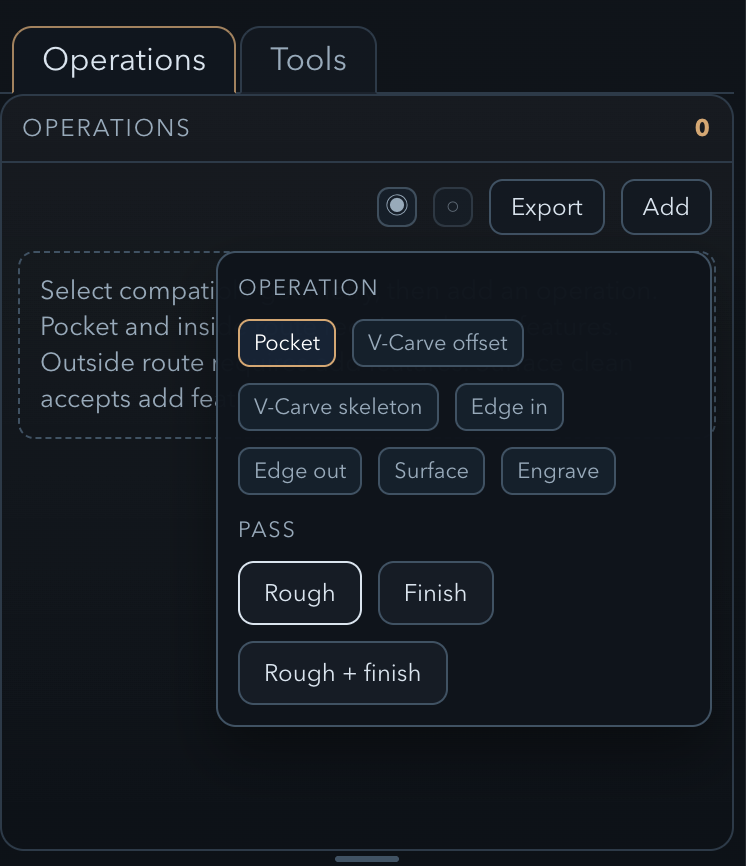
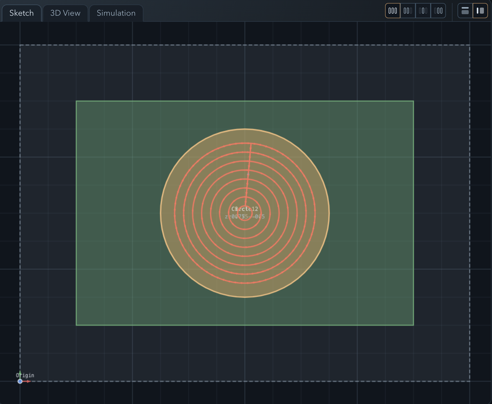
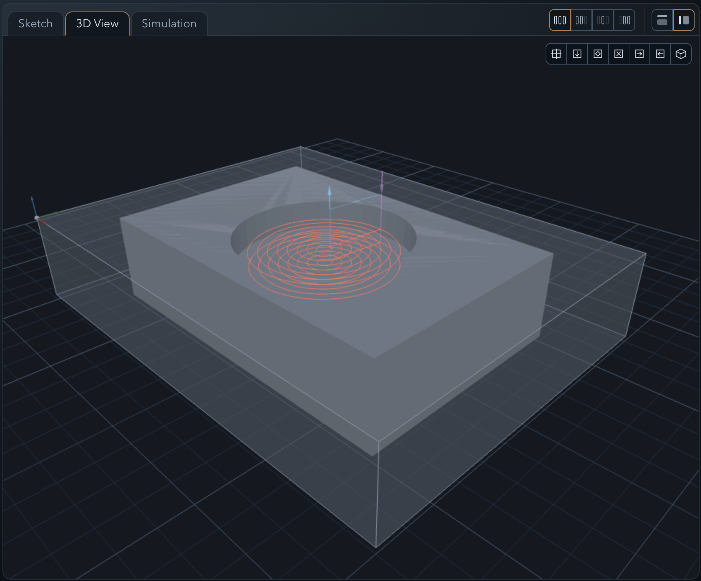
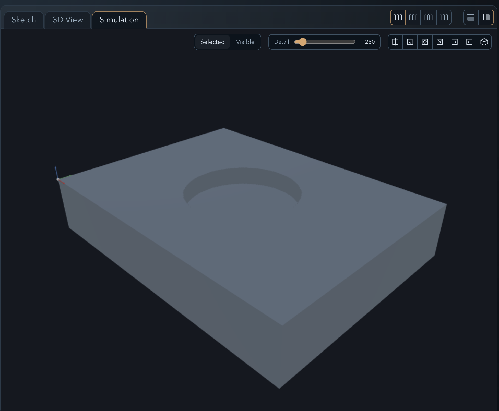
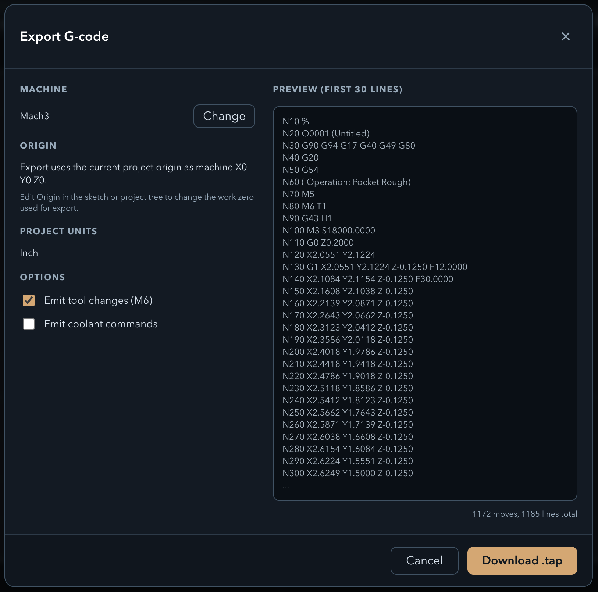

Follow along to sketch a part, assign a machining operation, preview the toolpath, and export G-code — all without leaving the browser.
Open PureCut CNC and click New Project. The dialog asks for a project name and a template. Select the Blank Imperial template ("Empty project in inches.") — the preview on the right confirms Units: Inch and a default Stock of 4 × 3 × 0.75. Click Create Project.
You land on the Sketch view with an empty canvas and a feature tree on the left. The default stock Top Z of 0.75 in is inherited by any features you create.

In the toolbar, click the Rectangle tool. Click once on the canvas to place the first corner, then click again to set the opposite corner. Use the dimension inputs to lock the size to an exact value — for example, 4 × 3 inches.
This rectangle defines the outer boundary of the model. Once placed, it appears as a feature in the tree. You can click it to select it and edit its dimensions in the properties panel at any time.

Select the Circle tool. Click the center of the rectangle to place the origin, then drag outward to set the radius. A 1-inch radius works well inside a 4 × 3 boundary.
With the circle selected, open its properties panel. The Top Z will already be set to 0.75 in (inherited from the stock). Set the Bottom Z field to 0.5 in. This means the floor of the pocket sits at 0.5 in — a cut depth of 0.75 − 0.5 = 0.25 in.


Click the Tools tab in the right-hand panel, then click Import from Library. The library dialog shows a catalogue of common bit profiles organized by type and diameter.
Locate the 1/4″ Flat End Mill entry and click Import. The tool is now available in the project's tool list and can be assigned to any operation.

Select the circle in the feature tree (or on the canvas), then click Add in the Operations panel. From the operation type dropdown, choose Pocket Rough.
In the operation settings, assign the 1/4″ End Mill you just imported. Review the default stepover and stepdown values — the app pre-fills sensible defaults based on the tool diameter. Leave them as-is for this walkthrough.
To calculate the toolpath and see it in the 3D view, make the operation visible by toggling its visibility icon in the feature tree. The toolpath is computed automatically whenever the operation is visible.

The workspace has three tabs — Sketch, 3D View, and Simulation — and you can switch between them freely at any point.
In Sketch you can still see the geometry and the feature tree, and go back to tweak any feature or operation parameter. In 3D View the pocket toolpath renders as colored lines over the stock block — rapid moves in one color, cutting passes in another. Use the mouse to orbit, zoom, and pan to inspect the path from any angle. In Simulation you can watch the tool move through the material and see the machined result.
If anything looks wrong — unexpected depth, toolpath outside the boundary, missed area — switch back to Sketch, adjust the feature or operation, and the toolpath will recompute automatically.



In the feature tree, click the top-level Project entry to open the project properties panel. Find the Machine dropdown and select Mach3. This sets the post-processor; PureCut CNC will format the output with the dialect, units, and header/footer that Mach3 expects.
Click Export G-code. The browser downloads a file ready to load directly into Mach3. Open it in a text editor to review the output before running it on your machine.

You've got a project with a rough pocket operation on the circle. Here are a few things to try on your own — each one builds on what you just learned.